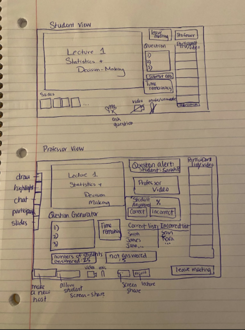
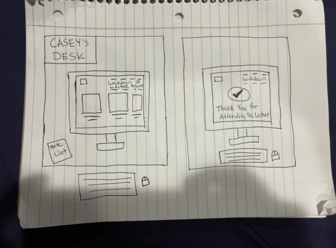
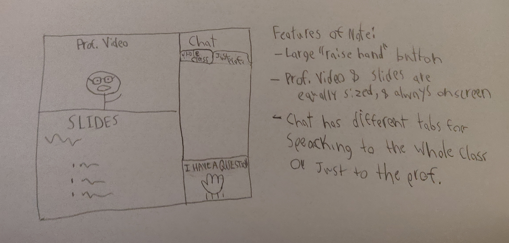

Design
Project by John Lloyde Rayela, Victoria Nathaniel, Zehra Patwary, and Chris Summers
Requirments Summary
Based on our findings from the contextual inquiry and analysis, we have come up with several requirements for our product. The first requirement our product will have will be functional; our app must allow users to quickly and easily communicate with each other through voice, video, and/or messages, similar to Zoom. Our next requirement is a data requirement. It specifies that the data our app will need access to is student Name data, data on what students are in a given class, and data on who the TA or Professor for said class is. We also have multiple Environmental requirements, the first of which being technical in nature, states that our app must be compatible with Windows and Mac laptops, since these are the devices that students most often use in a learning environment. Our second Environmental requirement is more social, and it states that students must be able to communicate with professors during and outside of lectures to ask questions, and that students may also need to communicate with other students in order to facilitate group work or study groups. Our next two requirements are both user characteristics. The first is that one type of potential user is a UMD student who is invested in learning and frequently asks questions both during and outside of lecture, yet can be easily distracted when online. The second type of user is UMD professors and TAs who are committed to answering questions and helping students succeed. The next two requirements are both Usability requirements. The first states that our app needs to be easy to learn and/or simple so that students can focus on the lesson they are in rather than trying to learn to use the app itself. The next is that the app needs to be efficient and fast so that students don’t get left behind when trying to ask questions during a lecture. Our ninth and final requirement is our User Experience Goal. Sometimes students struggle with asking questions or even understanding lecture content when delivered through an online medium, and other times students can get distracted by other tasks when attending an online class. Our goal is to help students minimize these distractions and enable students to more effectively ask questions, as well as enable professors and TAs to answer questions in a timely manner, both in and out of class.
Example User Persona: Mark Ramos
Mark Ramos is a UMD student, majoring in Computer Science. He has been taking classes online and they feel it can be challenging at times, especially when it comes to writing code. He feels it is difficult for him to ask for help online because he struggles with pronunciations and has an accent. He is also not able to show the professor where he may be making a mistake or whether his settings are correct for coding software which leads to frustration. He feels that in his major, he cannot interact with other students because there are no group projects, therefore he cannot ask other students. He also struggles to keep his focus while watching lectures. He wants to do well in his classes.
Demographics:
- Male
- Hispanic
- 20 years old
- UMD Student
- Computer Science Major
Personalities:
- Independent
- Hardworking
- Engages in extracurricular activities
- Socially active
Goals:
- Pass his computer science course
- To be able to interact with friends and family
Main tasks or activities:
- Watching computer science lectures at home
- Doing school projects like homework and quizzes
Motivations:
- Learn computer science from home online
Frustrations:
- Keeps getting distracted while trying to watch lectures
- Professor ignores or doesn’t understand the questions he asks because of his accent
Example Stakeholder Persona: Michelle Kennedy
Michelle Kennedy is a TA at UMD and our stakeholder. It is necessary to know how our stakeholders feel because we need to see from their perspectives and what are some of the challenges they face while online. Often she feels it is challenging to teach students online. She wants to make sure she is performing her duties as a TA and wants to ensure students are doing well. She feels online classes may help save commuting time but she feels many students who are visual learners seem to struggle. She also thinks many students don’t feel comfortable asking questions in front of other students, and therefore even if they wait until class is over, there may be other students that are also waiting. She wants to make sure all her students succeed.
Demographics:
- Female
- African-American
- 25 years old
- TA at UMD
- PhD student in iSchool
Personalities:
- Independent
- Hardworking
- Engages in extracurricular activities
- Socially active
- Friendly
Goals:
- Help students understand course content
Main tasks or activities:
- Answer questions that are asked
- Grade students work
- Attend class lectures
Motivations:
- Make sure no student is left behind or confused about course content
Frustrations:
- Difficult to explain to students who are visual learners
- Not all students get a chance to ask questions because they don’t feel comfortable asking questions in front of the class
Design Methodology
We used brainstorming and the double diamond model for understanding what some of the current features are in apps such as zoom. We then proceeded to see where some of the problems were and which features could be further improved to address the design requirements. One of the problems was that students struggle to focus in online classes because they are not required to turn on their videos. This is disadvantageous from the professors’ perspectives because they don’t know who is paying attention and actually understanding the class material. Some of the alternatives we suggested would ensure the technology is easy to use and also students are understanding the material. Another issue students had was having trouble asking questions in class. Often students' questions would go unanswered or the professor would move on before actually seeing a student's question if the student had an opportunity to ask a question at all. That’s why some of our design alternatives focus on making it easier to ask a question as well as including more understanding checks during a lecture. Another problem is students not attending the zoom online lecture because they think that it is not necessary to attend since most professors record lectures during the pandemic. This is why some of our design alternatives incorporate methods of verifying that students are present during an online class.
The Designs
Design 1: Auto-Questioner
One design alternative could be that students struggle to focus online since turning the video on is optional, there would be a feature on an online learning platform where there are auto-generated questions that students have to respond to, to ensure they are paying attention throughout the lecture. This will improve the learning experience for students as well as professors and keep the students engaged.
User Scenario
Sarah is a UMD student, majoring in Mathematics. Oftentimes, during her online classes, she feels she struggles to keep her focus. She feels she gets easily distracted because her Math class is not interactive. She believes if her professor made class more interactive, it would help students remember formulas because they will get practice using them during the lecture. When the lecture includes questions, students will pay attention closely since they are not required to keep their videos on during the lecture.
Pros and Cons
An advantage of this design is that it will ensure students are paying attention, and that will be reflected in the questions they answer. Although, a disadvantage could be that it may slow down the lecture due to the questions asked during the lecture which means the material covered may be less each lecture.
Comparison to Other Designs
This design will increase user experience because the user will have to interact to show to the professor that they are actually paying attention during lecture and that they are fully present. Also, by adding this feature, it will allow students to practice more. From the professor’s perspective, they will have an opportunity to see which student may require extra help with the material or whether they need to clear-up some concepts.
Ideation Process
We came up with this design because we needed to address the issue that students’ grades suffer because they lose their focus while in an online learning environment. This feature will enforce students to pay attention and ensure their grade does not suffer due to the lack of attention and focus.
Sketches
Design 2: Lockdown Lecture
Another design alternative to help students avoid being distracted would be for the professors to have an option to make the app lock down the computer for the duration of the lecture, similar to certain quiz-taking software, a student would not be able to access anything on their device besides our app (and perhaps some whitelisted programs such as Microsoft, PowerPoint or the Elms website) until class is over.
User Scenario
Casey is a college student who likes to have a little fun while studying but at the same time she can’t focus on online lecture videos. She feels that her life has been more difficult and frustrating to learn through an online environment. She thinks that learning outcomes and focusing on the computer to work are now much harder to achieve due to a sudden shift on her in person lecture to an online lecture environment. She believes that if the online lecture has the feature of “LOCKDOWN LECTURE Browser” it will somehow help her get her work done and she will be able to focus more on her assignments. When attending an online lecture a student would just attend the zoom lecture with their cameras off and usually don’t pay much attention in the class online lecture since they will think that it will be recorded. She believes that having a lockdown lecture feature on the computer, students will be able to focus more on the lecture since they won’t be able to do anything else on their computer once the lockdown browser feature is activated.
Pros and Cons
An advantage of this feature is that it prevents the students from using other websites or applications while the lockdown lecture feature is running. A disadvantage of this feature is that it prevents students from taking notes on the same device that they are using while watching the online lectures.
Comparison to Other Designs
Comparing Lockdown Lecture to the other three design options such as Auto Questioner, BetterZOOM, and Eye Tracker, I think lockdown lecture has its fair share of advantages and disadvantages compared to the other three designs. Having a lockdown browser during a lecture can have positive and negative effects on the students because it doesn’t really make the students feel motivated and comfortable to study while being monitored during lectures. One potential implication of these designs with respect to the requirements, goals, interaction and other user experience designs is that school and university should find a better alternative application or design that actually accommodates the students' success during an online learning environment.
Ideation Process
We thought about this design as one of our alternative designs to make sure that students are not getting distracted or off track with their work and assignments during an online learning experience. This will provide a workable design but not a feasible solution to the problem.
Sketches
Design 3: BetterZoom
One more design alternative we have is to make an app that is extremely similar to zoom in terms of functionality but designed specifically for students and professors. Many UI elements would be different, such as the “raise hand” feature being much more prevalent on screen, or the chat window making small notification sounds to help alert a professor when a student has a question, even if they are in the middle of a lecture.
User Scenario
Sam is a biochemistry student at UMD tuning-in to an online biochem class. He knows this class is hard and he needs to pay attention, so when he opens the app he is grateful to see that the professors camera feed and the professors screenshare of the slides are both front and center taking up equally large parts of the screen. Halfway through the lecture Sam gets confused about a concept, and wants to get an answer quickly without disturbing the class. So, he navigates to the “Class” tab on the chat panel and asks his classmates if they can help him. When he sees that they are confused too, he decides to click the big “raise hand” button. When he clicks this, the professor is notified and Sam is unmuted to ask his question out loud.
Pros and Cons
This design has several advantages and disadvantages. Some of the advantages are that many students and instructors are already familiar with similar software and can learn this one relatively quickly and easily. Another advantage is that this design makes it very easy for students and instructors to communicate with each other. One disadvantage of this design is that it is similar to other products out there, so it may be difficult for users to justify switching to it if they feel their prior solution works well enough. Another disadvantage is that this design doesn’t do much extra to help users avoid being distracted while online, and a user who is not willing to engage fully with the class on their own will see no benefits from this app beyond a regular lecture recording. This design fulfills 8.5 out of our 9 design requirements, only falling short in the last half of the 9th requirement. This user experience requirement states that our goal is to help students minimize distractions and more effectively communicate with their peers and instructors. This design doesn’t do much extra to help minimize distractions, although there may be ways to address this moving forward if this design is chosen.
Comparison to Other Designs
There are several advantages and disadvantages this design has when compared to our other three designs. The first major advantage when compared to any of the designs, as mentioned above, is that this design is similar to other existing apps and would be especially quick for users to learn to use. The first major disadvantage also applies to all three other designs, in that all of our other designs do more to help minimize distractions for the user. When comparing this design to designs 2 and 4 (Lockdown Lecture and Eye Tracker), another clear advantage this design has is that students will feel more comfortable using this app, as the other two design ideas are much more invasive.
Ideation Process
When coming up with ideas for this design, we tried to focus on making something that would be easy for users to learn to use, while also addressing some of their major complaints with similar software. Since we already had two ideas that focused heavily on reducing distractions, we didn’t focus on that aspect as much when brainstorming for this design.
Sketche of Student View:
Sketch of Instructor View:

Design 4: Eye Tracker
Our final and wackiest design alternative is for our app to use eye-tracking technology on the camera of every student’s laptop such that the professor could be notified every time a student looks away from their screen. This idea is particularly “out there” because it violates students' privacy and could be used to demand an unreasonable level of attention during lectures. It’s also just generally really creepy!
User Scenario
Jane is a junior in public health science. Two of her classes are online. Most of the time, she is always distracted by social media, and text messages. Her focus in class reduces in every discussion class. Her professor noticed the increased percentages of her and other students who do not engage in class. The professor decided to implement an eye tracking system in every lecture. This eye tracking system helps the professor to know the number of active students paying attention in class.
Pros and Cons
The eye tracker design is a wacky idea as this design has some advantages and disadvantages. One advantage is that professors have the ability to monitor students' participation. Another advantage is that students will be more focused in class as this may lead to getting a good grade in class. One disadvantage is that it violates students' privacy. Another disadvantage is that it causes anxiety and too much pressure on students.
Comparison to Other Designs
Comparing Auto-Questioner and BetterZoom design, this eye tracker design ensures less distractions and observes where students might be stuck on. However, auto-questioner design fulfills all expectations such as keeping students engaged, monitoring how well they understand the concept without violating their privacy. One common implication of these four designs including the wacky design is that students might be intimidated and the data analysis may be inaccurate.
Ideation Process
We thought about this design as an alternative design that will reduce distractions and increase students’ online interaction. This provides more feasible access in supporting students learning.